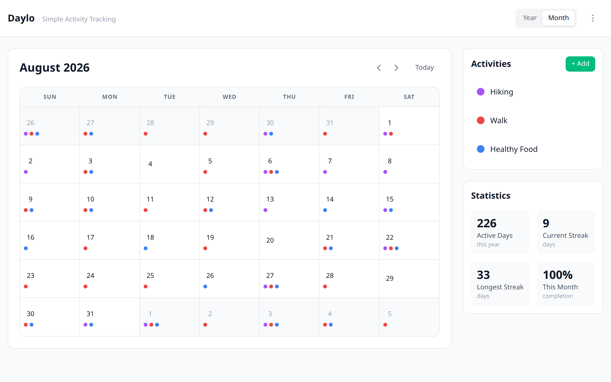

See your whole year at a glance.
Daylo is a simple habit tracker. Tap once a day for each habit you keep, and your year fills in with color. No account needed. Your data stays on your device.
Free and open source · Windows · Mac · Linux · Android

One tap a day
Open Daylo, tick what you did, close it. Your streaks and monthly progress update on their own.
Your data, your device
Everything stays on your device. No sign-up, no server, no tracking. You can export a backup anytime.
Every screen you own
Windows, Mac, Linux and Android. The same calendar on your desk and in your pocket.
Download
Every download is built automatically from Daylo's public code. Nothing hidden.
Daylo is new, so Windows and Mac may show a warning the first time you open it. That is normal for apps not yet registered with Microsoft or Apple. On Windows, click More info and then Run anyway. On Mac, allow it in Privacy and Security. Every release includes a list of file checksums if you want to double-check a download.